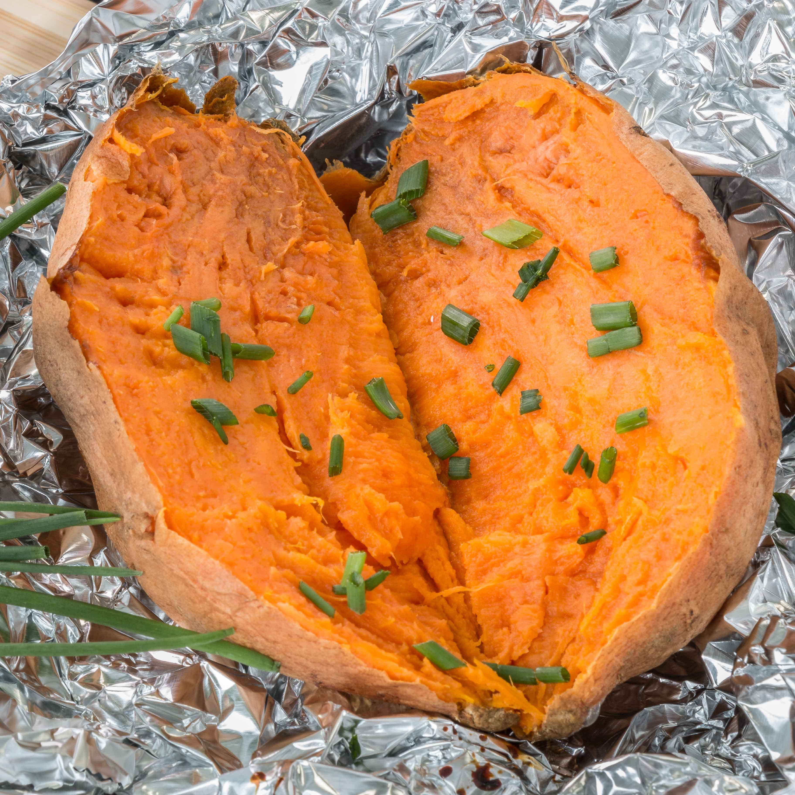

Baked Sweet Potato

Time: About 1 hour, reduced to about 45 min if you Microwave for 3 minutes first
- Preheat the oven to 425°F. Coat the potatoes in olive oil,
line a baking pan with aluminum foil, and place the potatoes in it.
- Pierce each potato a few times with a fork or thin-bladed knife. Bake, shaking
the pan once or twice, for about 45 minutes, then check if the potatoes are
soft and tender. If not, bake for 15 more minutes. Serve with butter.
Home